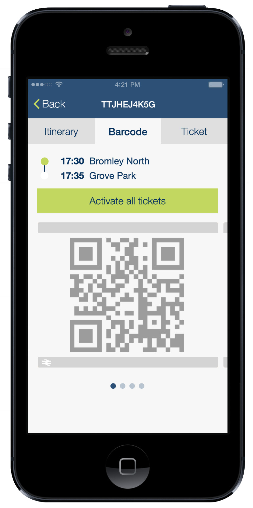

I was Trainline's first in-house UX designer. I worked on a mobile-first rebuild of the website, the iOS and Android apps, and the launch of mobile ticketing.
My role
User Experience Designer. For a period I was the only designer in the business.
How I worked
Embedded in an agile development team, sitting among the engineers, in a team moving to continuous delivery. About half my time was with product marketing.
Platforms
Responsive web, native iOS and native Android.
A note on age
This is earlier work. I include it because it is where I designed for something people open every day without thinking.
Context
Trainline had used agencies for design. An agency would deliver a vision without the detail engineers needed to build from, so there was a lot of guesswork and the experience became inconsistent. The agency kept the source files, which made every change expensive.
The company set up a new agile team for a project called Tango. The goal was to take the existing website and make it mobile first and tablet friendly. Many people in the business felt a redesign was unnecessary, because Trainline was already the leading brand. My argument was that challenger brands were arriving with better experiences, especially in apps, and the leader had to stay ahead of them.
Decisions
Ticket selection on a small screen
The problem
The ticket selection page showed several ticket types across different times and classes. On desktop that data spread out horizontally. It was the hardest design problem on the project.
Chose
I researched common patterns across iOS and Android apps. We used a pattern that leaves the next option partly visible at the edge of the screen, so people understand they can swipe across for more.
Ticket selection, mobile
Image to addThe ticket selection screen with the next option partly in view.
Flows that respect each platform
Chose
To design the screen flows for iOS and Android separately where the platforms behave differently. Back navigation is the clearest example. It works differently on each and leads to different results, so one flow could not serve both.
Flow on iOS
Image to addThe booking flow on iOS.
Flow on Android
Image to addThe same flow on Android, showing the back behaviour.
Mobile ticketing
As Tango moved into development I worked on features across the apps and the web. One was the launch of mobile ticketing, which was the first of its kind for a UK train ticket provider.
Add what shipped on iOS and Android, what ticket barriers and poor signal did to the design, and what happened after launch.
Mobile ticket

Listening to the calls
I travelled to the call centre in Edinburgh, answered calls and listened in, to understand the problems customers were raising. It fed the work on refunds. I used the same method again at Hotels.com.
Results
8%increase in conversion when Tango launched, measured at the time across the whole funnel from homepage search to checkout
Trainline's data science team measured it, and one of them sat in our working group. I do not have the report any more, so I describe it as what the team measured at the time.
At a company off-site my team won best idea for Group Savvy, a native app concept for finding people at a station to share a group ticket with.
The team won Trainline's Team of the Year.
Beyond the screens
With the director of product I spoke to design agencies about a brand refresh. I co-wrote the statement of work and owned the sections on UX, design and research. I decided how many designers we needed, whether they worked in our office and for how many days, and whether we received the editable source files. That last point was a lesson from the previous agency.
We rated each proposal and presented our recommendation to the leadership team. I put together the starting concept and mood board, which used photography of British landscapes moving past a train window. The idea of movement carried into the interface as small animations and a branded loader.
When funding came through for an in-house team, I wrote the brief for one senior and three mid-weight designers. I ran the case study review and the design test. Candidates got real problems we were working on, with a whiteboard, paper and the internet. I was looking at how they thought, not for a finished answer.
Brand refresh mood board
Image to addThe mood board or a screen from the refreshed design.